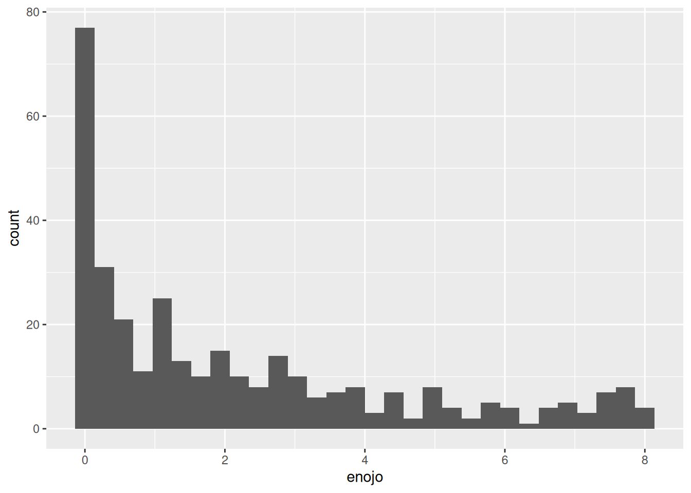
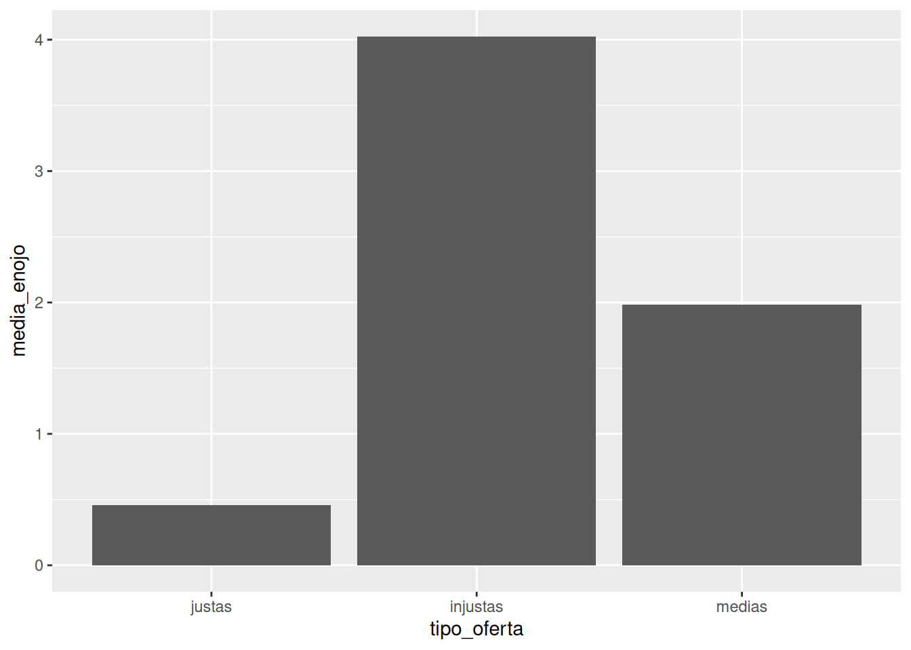
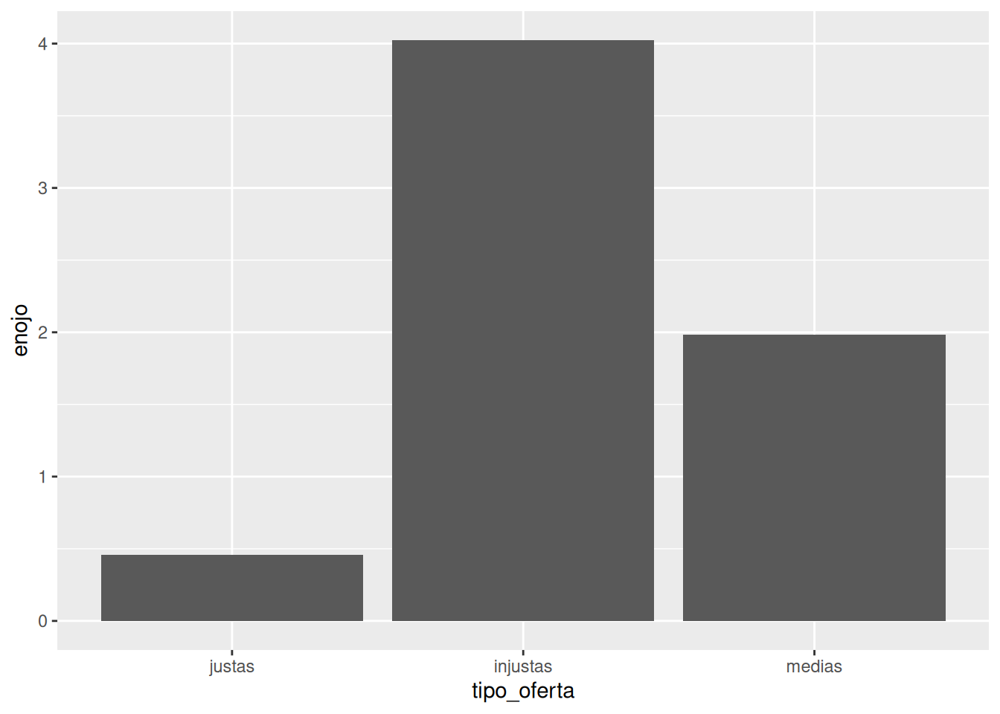
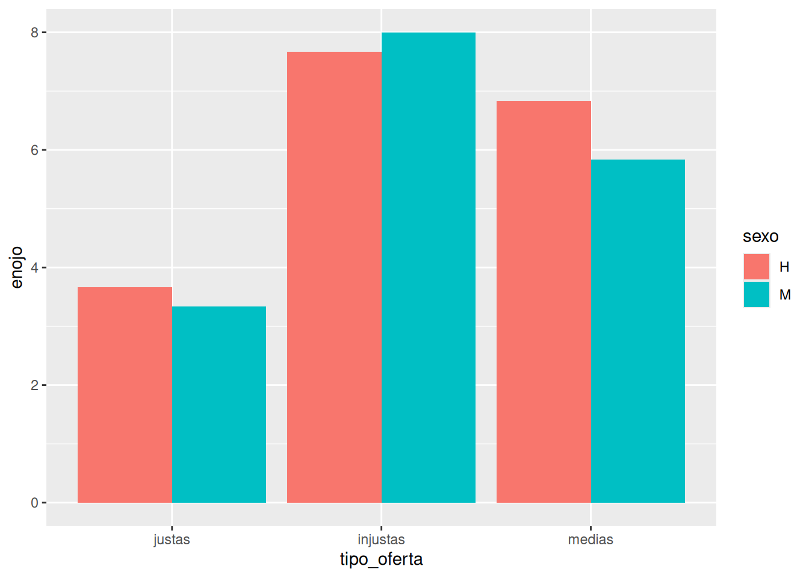

# 1. creo una capa con el data frame e indico la variables que quiero usar
migrafico = ggplot(data = parts3, mapping = aes(x = enojo))
#2. agrego una capa con los valores en forma de histograma
migrafico + geom_histogram()
Camila Zugarramurdi
Álvaro Cabana
31 de diciembre de 2021
ggplot2)ggplot2 es un paquete para realizar gráficos. Es una gramática con su propia sintaxis basada en:
ggplot(), que toma 2 argumentos:aes(). La función aes (por aestethics) indica la ‘estética’ del gráfico, esto es, fundamentalmente, qué variables irán en el gráfico y en qué ejes.Atento! Hay un lío importante acá entre funciones y argumentos: ggplot es una función con el argumento mapping que toma de entrada la salida de una función que es aes; no aclares que oscurece, en el ejemplo se va a ver más claro, presten atención a los colorcitos.
geom_histogram()): para histogramas, donde x es una variable continua y queremos ver la distribucióngeom_point()): para gráficos de puntos o dispersión, donde x e y son variables continuasgeom_line()): para gráficos de lineageom_bar()): par gráficos de barras, donde x es una variable discretageom_boxplot()): para diagrmas de cajas y bigotes, donde x es una variable discrtea e y es una variable continuaEn general, para usar ggplot cómodamente necesito que el dataframe que almacena mis datos esté en formato largo para lo cual es muy útil la función pivot_longer que vimos en la sesión pasada
Veamos algunos ejemplos, a partir de los datos que usamos en las sesiones anteriores. Empecemos con los datos de participantes del ultimátum game del ejercicio 6, al data frame en formato largo le habíamos llamado parts3, ¿Qué distribución tienen las respuestas de enojo? Puedo usar geom_histogram() para graficar distribuciones discretas:
# 1. creo una capa con el data frame e indico la variables que quiero usar
migrafico = ggplot(data = parts3, mapping = aes(x = enojo))
#2. agrego una capa con los valores en forma de histograma
migrafico + geom_histogram()
Bien, grafica, pero me da un mensaje y un warning. Veamos. El mensaje dice: stat_bin() usa bins = 30, elegir mejores valores con el argumento binwidth. Binwidth indica el ancho de cada barra y bins el número de barras, tengo 30 barras para valores entre 0 y 8, es demasiado para este histograma. Mejor usamos barras de ancho 1? Y ya que estoy le cambio el color del relleno (fill) y del borde (colour) para que sea vea mejor:
Ok, luce bien, fácil, primero indico datos y variables, después le doy forma y un poco de color. Naturalmente, quiero ver cómo cambia el enojo en función del tipo de oferta, ¿cierto? Las ofertas injustas, ¿producen más enojo que las ofertas justas? Para eso necesito un gráfico de barras, con una barra para cada tipo de oferta (esto es el eje x) y que la altura de la barra corresponda al promedio de enojo para ese tipo de oferta (esto es el eje y).
# calculo las medias por condición
parts4 = parts3 %>%
group_by(tipo_oferta) %>%
summarise(media_enojo = mean(enojo, na.rm = T))
# otra vez, 1. creo una capa con el data frame e indico la variables que quiero usar
migrafico2 = ggplot(data = parts4,
mapping = aes(x = tipo_oferta, y = media_enojo))
#3. agrego una capa con los valores en forma de barra
migrafico2 +
geom_bar(stat='identity')
Agrego stat=identity para que las barras muestren el valor exacto que calculé antes.
En realidad no tengo por qué calcular las medias antes de mandar graficar. Puedo utilizar el argumento ‘stat’ para que ggplot lo calcule por mi:
#no etiqueto los argumentos por que me gusta la adrenalina
migrafico3 = ggplot(parts3,aes(x=tipo_oferta,y=enojo))
migrafico3 + geom_bar(stat="summary",fun="mean")
Como siempre, no está de más consultar la ayuda:
Y si quiero agregar una variable más? Por ejemplo, el nivel de enojo para cada tipo de oferta y para cada sexo:
# agrego la variable sexo en la estética, quiero que use el relleno para distinguir sexos
migrafico4 = ggplot(data = parts3,
mapping = aes(x = tipo_oferta, y = enojo, fill=sexo))
# y le digo que ponga las barras una al lado de la otra con el argumento position
migrafico4 +
geom_bar(stat='identity', position="dodge")
¿Cómo sé que los argumentos que necesito son fill y position y dónde tengo que ponerlos? Porque consulto la ayuda. En el caso de ggplot, recomiendo mirar la ayuda en línea, ya que se ve mejor que dentro de R. Para eso simplemente pongo en google: geom_bar ggplot2.
El lector perspicaz notará la diferencia del argumento fill en el primer ejemplo y en el segundo ejemplo. En el primer ejemplo usé fill adentro de
geom_histogram()y le asigné un color entre comillas, dije:geom_histogram(...fill="blue"). En el segundo usé fill adentro deaes()y le asigné una variable de mi data frame, dije:aes(...fill=sexo). Los parámetros de fill (y otros como shape, size, colour…) pueden usarse de dos maneras: enaes()asociados a valores de variables, y engeom...()asociados a valores constantes.
Repasemos:
ggplot() indicando el data frame, y las variables con la ayuda de la función aes()geom_algunacosa() seguido de los argumentos de cada tipo de geom, que los puedo consultar en la ayuda.LA GUIA para entender estos y muchos otros gráficos y sus argumentos, es el cheatsheet de ggplot2